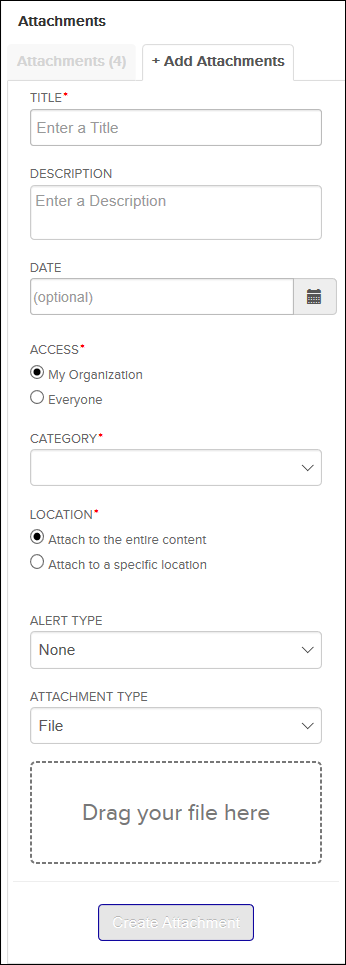

Not applicable for Pinpoint Standalone Light.
Note: Adding attachments requires having all permissions enabled for Can Upload
Supplement.
If you have proper permissions, do these steps to add a new attachment to a
document:
-
Navigate to the document you want to add an attachment to.
-
In the Content header bar, do one of these choices:
- Click the Attachments tab on the right side of
the page.
- Click the
 Upload Temporary Revision / Supplement icon.
Upload Temporary Revision / Supplement icon.
The
 Attachments
Attachments pane appears:

Attachments Pane
-
Do one of these choices:
- Click the + Add Attachments tab.
- If there are no attachments for the document, click the green
Add an attachment button.
The
+ Add Attachments tab is shown. The options
available can vary.

+ Add Attachments Tab Example
-
In the TITLE field, type a title for the
attachment.
-
Optional: Add text in the DESCRIPTION field.
-
Optional: To select a date for the attachment, do these substeps:
-
To the right of the DATE field, click the
 select date icon.
select date icon.
A calendar widget shows. By default, the current date is
selected.
-
Select a date for the document from the calendar widget.
The date you selected shows in the DATE
field.
-
Optional: If an administrator configured Pinpoint
Viewer to
show the NOTIFY DATE field, do these substeps to setup an
email notification for when the attachment should be addressed:
For details on how an administrator can configure notifications, refer to the
Flatirons
Pinpoint
Configuration Guide,
"Configuring Attachment Notifications" section.
-
To the right of the NOTIFY DATE field, click the
select date icon.
A calendar widget shows. By default, the current date is
selected.
-
Select a date for the document from the calendar widget.
The date you selected shows in the NOTIFY
DATE field and a new NOTIFICATION
RECEIPIENTS field is now visible.
-
In the NOTIFICATION RECEIPIENTS, type the email
addresses that should receive a notification on the selected
NOTIFY DATE.
If you type more than one email address, type a comma
(,) between each address.
If you complete this procedure, the email addresses you typed will be
sent a daily alert once the current date matches or is greater than the
notification date. The specific time of day the email is sent is based on what
was configured by the administrator.
-
If you are viewing a publication of your
organization, select one of these ACCESS radio
buttons:
-
From the CATEGORY drop-down menu, select the type of
upload.
The choices in this drop-down menu are configured through a backend JSON file.
Refer to the Flatirons
Pinpoint
Configuration Guide, "Configuring Attachment Category Types" section.
Here are some example choices in the CATEGORY drop-down
menu:
- Supplement
- Temporary Revision
-
From the LOCATION radio buttons, do one of these
choices:
- If the attachment does not relate to any specific locations, select the
Attach to the entire content radio
button.
- If the attachment relates to specific locations in a document rendered
as HTML, do these substeps:
-
Select the Attach to a specific location
radio button.
Add anchor to selection icons are shown
to the left side of content locations that support attachments.
In addition, an anchors message appears below the
LOCATION radio buttons.
-
Click the
Add anchor to selection icons of the
locations that should reference the attachment.
The anchor location IDs you selected are shown in a list format
below the
LOCATION radio buttons.
Note: To
remove an anchor location, click the remove anchor icon to the right
of the listed anchor.
- If the attachment relates to a specific LOCATION
in a PDF document, do these substeps:
-
Select the Attach to a specific location
radio button.
The PAGES field appears below the
LOCATION radio buttons.
-
In the
PAGES field, type a comma separated
list of page numbers that should reference the
attachment.
Note: The comma separated list of page numbers
can include ranges using hyphens (-).
For example, type 1,3-5 to reference the
attachment on pages 1, 3, 4, and 5.
-
If the ALERT TYPE drop-down menu is not locked. select
one of these importance types:
- To prevent the attachment from being included in any special
notifications, select the None menu option.
- To include the attachment in Attachments Available (Click to
View) notification banners at the top of the document in the
Content pane, select the
Normal menu option.
- To show the attachment in an Important Attachments
pop-up when viewers open the document (as well as the Attachments
Available (Click to View) notification banners), select the
Important menu option.
-
Do one of these choices:
- If the selected CATEGORY permits file
attachments, do these substeps to attach a file:
-
From the ATTACHMENT TYPE drop-down menu,
select the File menu option.
The Drag your file here field is shown below
the ATTACHMENT TYPE drop-down menu.
-
Drag a file from your computer into the Drag your file
here field or click the field to select a file
using a standard File Explorer dialog.
The filename is shown below the Drag your file
here field.
- If the selected CATEGORY permits hyperlink
attachments, do these substeps to attach an external hyperlink to a
webpage:
Note: If you want to attach a link to a publication location, it
is recommended to use the Existing Publication
menu option instead. If you use Link menu option
for this case and a user clicks the link, a new webpage instance will
open that ignores the current user progress and Pinpoint Mobile users
will not be able to open the links directly in the Pinpoint Mobile
application.
-
From the ATTACHMENT TYPE drop-down menu,
select the Link menu option.
The LINK field is shown below the
ATTACHMENT TYPE drop-down menu.
-
In the LINK field, type a valid URL to a
webpage.
Note: The URL must include the entire hyperlink, including the
"http://" or "https://"
For example, type:
https://www.google.com/
- If the selected CATEGORY permits existing
publication attachments, do these substeps to attach a Pinpoint link to a
specific revision of an existing publication:
-
From the ATTACHMENT TYPE drop-down menu,
select the Existing Publication menu
option.
The SELECT PUBLICATION field is shown
below the ATTACHMENT TYPE drop-down
menu.
-
Click the SELECT PUBLICATION field.
The Publication dialog is shown with a list
of publications grouped by library.
-
In the
Publication dialog, click the expand icons to navigate to the
desired revision of the desired publication.
Note: You can also
use the collapse icons to
hide groups from view as needed.
-
In the
Publication dialog, click the desired revision you want to reference.
Note:
If you select Default, Pinpoint will add a link to the revision that was selected by
administrators with the Publication
Management dialog. If nobody in your
organization uses this dialog to select a specific
revision, this option creates a link that always updates
to the latest revision. Refer to Manage Organization Revisions.
The SELECT PUBLICATION field shows the
publication revision you selected.
-
Click the green Create Attachment button.
The uploaded attachment appears in the
Attachments pane. If you added
an attachment with Pinpoint
Viewer online,
it is made available to other users of Pinpoint
Viewer online
according to the selected ACCESS option. A synchronization
job can also copy it to Pinpoint Standalone. If
you created the attachment in Pinpoint Standalone
however, it is not copied over to Pinpoint
Viewer online.
Additionally, Pinpoint Mobile
users (as determined by the selected ACCESS option) can also
see your new attachment if they do a manual synchronization.